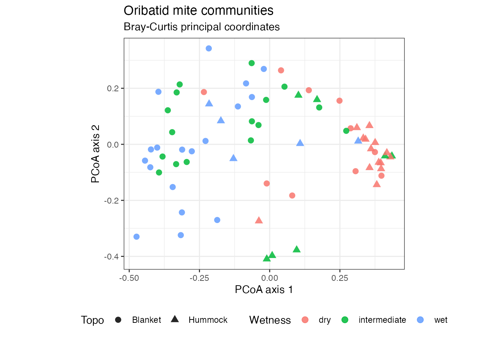
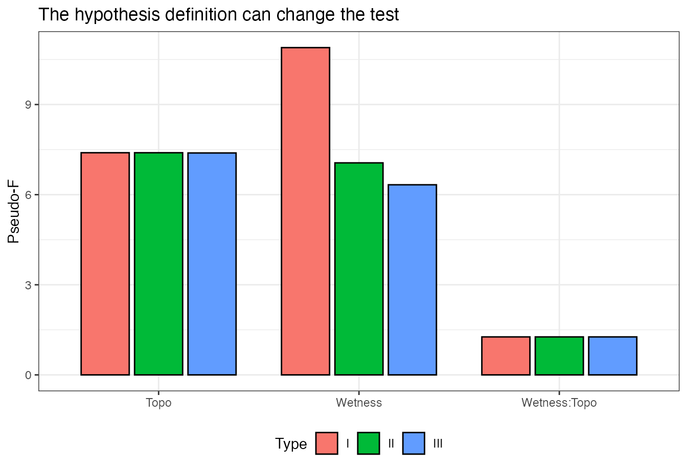

fixed-effects.RmdFixed effects describe systematic differences in community composition (e.g. habitat, treatment, season, environmental gradients, and their interactions)
Type I, II, and III specify different questions when predictor subspaces overlap. In a perfectly orthogonal design they coincide; with unequal cells, correlation, or interactions they need not.
The vegan::mite data contain 35 oribatid mite taxa from
70 samples. For a compact factorial example we combine the recorded
topographic class with tertiles of water content. Water content is
categorised into three groups: dry, intermediate, and wet.
data(mite, mite.env, package = "vegan")
mite_bray <- vegdist(mite, method = "bray")
breaks <- quantile(mite.env$WatrCont, c(0, 1/3, 2/3, 1))
env <- transform(
mite.env,
Wetness = cut(
WatrCont, breaks = breaks, include.lowest = TRUE,
labels = c("dry", "intermediate", "wet")
),
Topo = droplevels(factor(Topo))
)
with(env, table(Wetness, Topo)) |>
kbl(digits=3) |>
kable_styling(bootstrap_options = c("striped", "hover", "condensed")) | Blanket | Hummock | |
|---|---|---|
| dry | 10 | 14 |
| intermediate | 16 | 7 |
| wet | 18 | 5 |
All six combinations occur, but their sample sizes differ. The ordination suggests that both predictors may contribute to composition.
ord <- as.data.frame(cmdscale(mite_bray, k = 2))
names(ord) <- c("Axis1", "Axis2")
ord$Wetness <- env$Wetness
ord$Topo <- env$Topo
ggplot(ord, aes(Axis1, Axis2, colour = Wetness, shape = Topo)) +
geom_point(size = 2.6, alpha = 0.85) +
labs(
title = "Oribatid mite communities",
subtitle = "Bray-Curtis principal coordinates",
x = "PCoA axis 1", y = "PCoA axis 2"
) +
theme_bw() +
coord_fixed() +
theme(legend.position = "bottom")
Type I asks what each term adds at the point where it enters the formula. The question is explicitly ordered.
Use Type I when order expresses the scientific model: for example, adjust for a pre-treatment gradient before asking what treatment adds. Do not choose an order because it produces the smaller p-value.
With wetness first:
wetness_first <- permanova(
mite_bray ~ Wetness * Topo, env,
type = "I", permutations = 499, seed = 11
)
wetness_first$table[1:3, c("Source", "df", "Pseudo-F", "P(perm)")] |>
kbl(digits=3, caption = "Type I") |>
kable_styling(bootstrap_options = c("striped", "hover", "condensed")) | Source | df | Pseudo-F | P(perm) |
|---|---|---|---|
| Wetness | 2 | 10.895 | 0.002 |
| Topo | 1 | 7.396 | 0.002 |
| Wetness:Topo | 2 | 1.265 | 0.176 |
Or with topography first:
topography_first <- permanova(
mite_bray ~ Topo * Wetness, env,
type = "I", permutations = 499, seed = 11
)
topography_first$table[1:3, c("Source", "df", "Pseudo-F", "P(perm)")] |>
kbl(digits=3, caption = "Type I") |>
kable_styling(bootstrap_options = c("striped", "hover", "condensed")) | Source | df | Pseudo-F | P(perm) |
|---|---|---|---|
| Topo | 1 | 15.069 | 0.002 |
| Wetness | 2 | 7.059 | 0.002 |
| Topo:Wetness | 2 | 1.265 | 0.176 |
Type II tests a main effect after terms that do not contain it, while holding its containing interactions out of that reduced model. In an additive model it is the familiar question “what does this predictor add after the other predictors?” and is invariant to formula order.
fit_II <- permanova(
mite_bray ~ Wetness * Topo, env,
type = "II", permutations = 499, seed = 11
)
fit_II$table[1:3, c("Source", "df", "Pseudo-F", "P(perm)")] |>
kbl(digits=3, caption = "Type II") |>
kable_styling(bootstrap_options = c("striped", "hover", "condensed")) | Source | df | Pseudo-F | P(perm) |
|---|---|---|---|
| Wetness | 2 | 7.059 | 0.002 |
| Topo | 1 | 7.396 | 0.002 |
| Wetness:Topo | 2 | 1.265 | 0.176 |
Type II is often a sensible default for ecological main effects when unequal cell counts are incidental and the interaction is not the main target.
Type III keeps all other terms, including interactions, in the
reduced model. A main effect is then a contrast at the reference implied
by the factor coding. With interactions this requires sum-to-zero
contrasts; permanova() applies them to a copy of the data
so the original data frame is not modified.
fit_III <- permanova(
mite_bray ~ Wetness * Topo, env,
type = "III", permutations = 499, seed = 11
)
fit_III$table[1:3, c("Source", "df", "Pseudo-F", "P(perm)")]|>
kbl(digits=3, caption = "Type III") |>
kable_styling(bootstrap_options = c("striped", "hover", "condensed")) | Source | df | Pseudo-F | P(perm) |
|---|---|---|---|
| Wetness | 2 | 6.329 | 0.002 |
| Topo | 1 | 7.388 | 0.002 |
| Wetness:Topo | 2 | 1.265 | 0.176 |
The three definitions can be compared directly:
fits <- list(I = wetness_first, II = fit_II, III = fit_III)
comparison <- do.call(rbind, lapply(names(fits), function(type) {
tab <- fits[[type]]$table
keep <- is.finite(tab$`Pseudo-F`)
data.frame(
Type = type, Term = tab$Source[keep],
PseudoF = tab$`Pseudo-F`[keep], P = tab$`P(perm)`[keep]
)
}))
ggplot(comparison, aes(Term, PseudoF, fill = Type)) +
geom_col(position = position_dodge(width = 0.8), color="black", width = 0.72) +
labs(
title = "The hypothesis definition can change the test",
x = NULL, y = "Pseudo-F"
) +
theme_bw() +
theme(legend.position = "bottom")
Ordinary numeric covariates can be combined with factors. Here water content and substrate density remain on their measured scales:
gradient_fit <- permanova(
mite_bray ~ Topo + WatrCont + SubsDens,
data = env,
type = "II", permutations = 499, seed = 21
)
gradient_fit$table[1:3, c("Source", "df", "Pseudo-F", "P(perm)")] |>
kbl(digits=3, caption = "Type I") |>
kable_styling(bootstrap_options = c("striped", "hover", "condensed")) | Source | df | Pseudo-F | P(perm) |
|---|---|---|---|
| Topo | 1 | 7.449 | 0.002 |
| WatrCont | 1 | 15.632 | 0.002 |
| SubsDens | 1 | 5.999 | 0.002 |
Standardising a predictor changes its coefficient scale but not the subspace tested by a one-degree-of-freedom term. Transformations that change ordering or linearity can change the ecological hypothesis and should be justified.